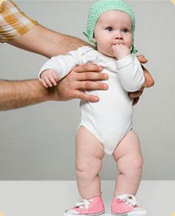
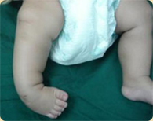
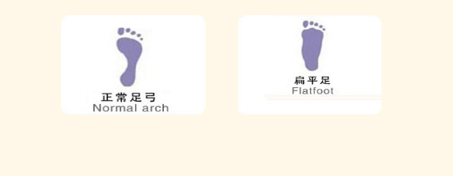

若家长无法准确判断孩子是否有下述症状，请及时咨 询余氏骨伤专业团队
人正常行走的步态是，两足掌向外张开各20~30度，如超过30度为外八步态，小于20度为内八步态。如出现在三岁以上儿童，需要到专科医院检查，因为有不少儿童先天性疾病，可以出现内八或外八步行。
小朋友自然向前直行5-6步后自然站立，双足向外张开角度超过30度（或向前直行时足尖明显朝外）。
小朋友自然向前直行5-6步后自然站立，双足张开角度小于20度（或向前直行时足尖明显朝内，或行走时双足落地点在一条直线上）。
膝关节内翻又称O型腿、外翻称X型腿。
小朋友自然站立，如果双膝内侧的空间距离超过5cm以上是O型腿；
小朋友自然站立时，双膝内侧紧贴并且两内踝距离超过10cm，就是X型腿。
5岁以下儿童的膝内翻或外翻现象多为生理性，可自然纠正。如5~6以上儿童还存在膝内翻或外翻，则需到专科医院进行诊治。
小朋友两腿并拢站立，踝关节紧贴，但双膝明显无法并拢。
小朋友两腿并拢站立，双膝内侧紧贴，但踝关节明显无法并拢。
第一步：看孩子的两肩是否等高。一侧肩膀比另一侧明显突出或“增大”,小朋友自然直立，双肩高度不同，出现高底肩现象。
第二步：用手摸一摸孩子背部的肩胛骨，看两块肩胛骨最下端是否等高，有没有一侧肩胛骨向后凸起。
小朋友自然直立，用手摸一摸孩子背部的肩胛骨，两块肩胛骨最下端出现不等高，或者出现其中一侧肩胛骨向后凸起。
第三步：孩子双髋部不等高，腰部不对称。小朋友自然直立，腰部两侧不对称或不等高
第四步：让孩子弯腰，家长用中指和食指沿着脊柱突划下来，看是否能划出正常的直线;触摸并对比孩子的腰、背双侧是否有隆起。
让小朋友直立站定后弯腰，家长用中指和食指沿着脊柱从颈部往腰部华东，发现划线是弯曲的，或者脊柱有部分位置明显隆起。
这四步当中只要有一步发现异常，都应尽快带孩子到医院脊柱专科检查。
如果观察到小朋友两腿不等长，臀部皮纹褶皱不对称，走路像“小鸭子”或有跛行步态，很可能患有先天性髋关节脱位（双侧或单侧）。
小朋友两腿不等长，臀部皮纹褶皱不对称，走路像“小鸭子”或有跛行步态。
如果小朋友足底向内，足掌 内收、内翻、内旋象马蹄状， 当会走路后仍走路摇摆不稳， 很可能是患有先天性马蹄内 翻足。
小朋友正常体位仰卧，两足底会自然相对、两脚尖 会自然相对。或者单足出现脚底朝内。
如果睡觉时小朋友的头总偏向一侧，日常活动中，头也有斜向一侧的倾向，颈部如摸到有可触及的包块，就要注意可能是先天性斜颈了。
小朋友睡觉时头总是偏向一侧，或者日常活动中也有斜向一侧的倾向。
扁平足，俗称平底足。如果发现小朋友在行走时，足底很内侧贴近地面，有可能是扃平足。可用以下办法进一步证实。让孩子光着脚，足底沾上水，然后在平地行走，根据留下的足印，就很容易发现平底足。
让小朋友赤足踩水，随后全脚掌着地踩在干燥地面上，脚印是下图“扁平足”形状
